소방설비산업기사(전기) (2020-06-06 기출문제)
1과목: 소방원론
1. 물을 이용한 대표적인 소화효과로만 나열된 것은?
- 냉각효과, 부촉매효과
- 냉각효과, 질식효과
- 질식효과, 부촉매효과
- 제거효과, 냉각효과, 부촉매효과
(정답률: 88%)

2. 다음 중 독성이 가장 강한 가스는?
- C3H8
- O2
- CO2
- COCl2
(정답률: 77%)
3. 연소 또는 소화약제에 관한 설명으로 틀린 것은?
- 기체의 정압비열은 정적비열보다 크다.
- 프로판가스가 완전연소하면 일산화탄소와 물이 발생한다.
- 이산화탄소 소화약제는 액화할 수 있다.
- 물의 증발잠열은 아세톤, 벤젠보다 크다.
(정답률: 63%)
4. 위험물별 성질의 연결로 틀린 것은?
- 제2류 위험물 - 가연성 고체
- 제3류 위험물 - 자연발화성 물질 및 금수성 물질
- 제4류 위험물 - 산화성 고체
- 제5류 위험물 - 자기반응성 물질
(정답률: 86%)
5. 불연성 물질로만 이루어진 것은?
- 황린, 나트륨
- 적린, 유황
- 이황화탄소, 니트로글리세린
- 과산화나트륨, 질산
(정답률: 68%)
6. 다음 중 전기화재에 해당하는 것은?
- A급 화재
- B급 화재
- C급 화재
- K급 화재
(정답률: 91%)
7. 기체상태의 Halon 1301은 공기보다 약 몇 배 무거운가? (단, 공기의 평균분자량은 28.84이다.)
- 4.⑤배
- 5.17배
- 6.12배
- 7.01배
(정답률: 69%)
8. 건물화재에서의 사망원인 중 가장 큰 비중을 차지하는 것은?
- 연소가스에 의한 질식
- 화상
- 열충격
- 기계적 상해
(정답률: 93%)
9. 0℃의 얼음 1g을 100℃의 수중기로 만드는데 필요한 열량은 약 몇 cal인가? (단, 물의 용융열은 80cal/g, 증발잠열은 539cal/g이다.)
- 518
- 539
- 619
- 719
(정답률: 70%)
10. 열전달에 대한 설명으로 틀린 것은?
- 전도에 의한 열전달은 물질 표면을 보온하여 완전히 막을 수 있다.
- 대류는 밀도차이에 의해서 열이 전달된다.
- 진공 속에서도 복사에 의한 열전달이 가능하다.
- 화재시의 열전달은 전도, 대류, 복사가 모두 관여된다.
(정답률: 77%)
11. 전기화재의 원인으로 볼 수 없는 것은?
- 중합반응에 의한 발화
- 과전류에 의한 발화
- 누전에 의한 발화
- 단락에 의한 발화
(정답률: 87%)
12. 피난대책의 일반적 원칙이 아닌 것은?
- 피난수단은 원시적인 방법으로 하는 것이 바람직하다.
- 피난대책은 비상시 본능 상태에서도 혼돈이 없도록 한다.
- 피난경로는 가능한 한 길어야 한다.
- 피난시설은 가급적 고정식 시설이 바람직하다.
(정답률: 90%)
13. 물과 반응하여 가연성 가스를 발생시키는 물질이 아닌 것은?
- 탄화알루미늄
- 칼륨
- 과산화수소
- 트리에틸알루미늄
(정답률: 69%)
14. 포소화약제의 포가 갖추어야 할 조건으로 적합하지 않은 것은?
- 화재면과의 부착성이 좋을 것
- 응집성과 안정성이 우수할 것
- 환원시간(drainage time)이 짧을 것
- 약제는 독성이 없고 변질되지 말 것
(정답률: 88%)
15. 공기 중의 산소는 약 몇 vol%인가?
- 15
- 21
- 28
- 32
(정답률: 84%)
16. 화재안전기준상 이산화탄소 소화약제 저압식 저장용기의 설치기준에 대한 설명으로 틀린 것은?
- 충전비는 1.1 이상 1.4 이하로 한다.
- 3.5MPa 이상의 내압시험압력에 합격한 것이어야 한다.
- 용기내부의 온도가 -18℃ 이하에서 2.1MPa의 압력을 유지할 수 있는 자동냉동장치를 설치해야 한다.
- 내압시험압력의 0.64~0.8배의 압력에서 작동하는 봉판을 설치해야 한다.
(정답률: 63%)
17. 공기 중 산소의 농도를 낮추어 화재를 진압 하는 소화방법에 해당하는 것은?
- 부촉매소화
- 냉각소화
- 제거소화
- 질식소화
(정답률: 85%)
18. 화재로 인하여 산소가 부족한 건물 내에 산소가 새로 유입된 때에는 고열가스의 폭발 또는 급속한 연소가 발생하는데 이 현상을 무엇이라고 하는가?
- 파이어 볼
- 보일 오버
- 백 드래프트
- 백 화이어
(정답률: 84%)
19. 다음 중 인화점이 가장 낮은 것은?
- 경유
- 메틸알코올
- 이황화탄소
- 등유
(정답률: 74%)
20. 자연발화를 일으키는 원인이 아닌 것은?
- 산화열
- 분해열
- 흡착열
- 기화열
(정답률: 72%)
2과목: 소방전기회로
21. 220V의 전원에 접속하였을 때 2kW의 전력을 소비하는 저항이 있다. 이 저항을 100V의 전원에 접속하면 저항에서 소비되는 전력은 약 몇 W인가?
- 206
- 413
- 826
- 1652
(정답률: 61%)
22. 그림과 같은 접점 기호의 명칭은?
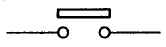
- 수동복귀 접점
- 기계적 접점
- 한시복귀 접점
- 한시동작 접점
(정답률: 72%)
23. 3상 교류 전원과 부하가 모두 △결선된 3상 평형 회로에서 전원 전압이 200V, 부하 임피던스가 6＋j8[Ω]인 경우 선전류의 크기 [A]는?
- 10
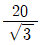
- 20
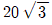
(정답률: 68%)
24. 그림과 같은 회로의 역률은 약 얼마인가?
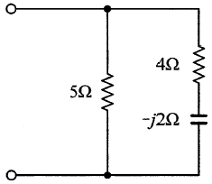
- 0.67
- 0.76
- 0.89
- 0.97
(정답률: 52%)
25. 3상 유도 전동기의 출력이 7.5kW, 전압 200V, 효율 88%, 역률 87%일 때 이 전동기에 유입되는 선전류는 약 몇 A인가?
- 11
- 28
- 49
- 56
(정답률: 53%)
26. 서지전압에 대한 회로 보호를 주목적으로 사용하는 것은?
- 바리스터
- IGBT
- 서미스터
- SCR
(정답률: 63%)
27. 비정현파의 실효값은?
- 기본파의 실효값에서 각 고조파의 실효값을 뺀 것
- 기본파의 실효값과 각 고조파의 실효값을 모두 더한 것
- 기본파의 실효값과 각 고조파의 실효값을 모두 더하고 제곱근을 취한 것
- 기본파의 실효값과 각 고조파의 실효값을 각각 제곱하고 모두 더한 후 제곱근을 취한 것
(정답률: 60%)
28. 적분시간이 2초이고, 비례감도가 5인 PI제어기의 전달함수는?
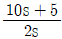
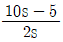
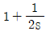
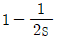
(정답률: 56%)
29. 저항 R과 커패시턴스 C의 직렬회로에서 시정수(s)는?
- RC
- C/R
- 1/(RC)
- R/C
(정답률: 61%)
30. 회로의 전압과 전류를 측정할 때 전압계와 전류계를 부하에 연결하는 방법으로 옳은 것은?
- 전압계는 병렬, 전류계는 직렬
- 전압계는 직렬, 전류계는 병렬
- 전압계와 전류계 모두 직렬
- 전압계와 전류계 모두 병렬
(정답률: 74%)
31. 서로 결합하고 있는 두 코일의 자기인덕턴스가 5mH, 8mH이다. 가극성일 때의 합성인덕턴스가 L이고, 감극성 일 때의 합성인덕턴스 L'은 L의 30%이었다. 두 코일 간의 결합계수는 약 얼마인가?
- 0.35
- 0.55
- 0.75
- 0.95
(정답률: 49%)
32. 100V, 60W의 전구와 100V, 30W의 전구를 직렬로 접속하여 100V의 전압을 인가했을 때 두 전구의 밝기에 대한 설명으로 옳은 것은?
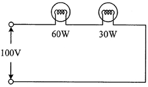
- 100V, 60W 전구가 더 밝다.
- 100V, 30W 전구가 더 밝다.
- 인가전압이 같으므로 밝기가 똑같다.
- 직렬접속이므로 수시로 변동한다.
(정답률: 66%)
33. 논리식
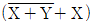
를 간단히 정리한 것은?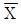
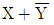
- X
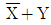
(정답률: 58%)
34. 변압비(권수비) 22000/110의 PT를 사용하여 교류전압을 측정한 결과 전압계가 90V를 지시하였다. PT의 1차측 교류회로의 전압[V]은?
- 9900
- 18000
- 19800
- 22000
(정답률: 65%)
35. 제어시스템의 구성에서 제어요소가 제어대상에게 주는 것은?
- 기준입력
- 동작신호
- 제어량
- 조작량
(정답률: 62%)
36. 1대의 용량이 7kVA인 변압기 2대를 가지고 V결선으로 구성하면 3상 평형부하에 약 몇 kVA의 전력을 공급할 수 있는가?
- 5.77
- 8.66
- 10
- 12.12
(정답률: 59%)
37. 목표값이 시간에 관계없이 항상 일정한 값을 가지는 제어는?
- 정치제어
- 추종제어
- 비율제어
- 프로그램제어
(정답률: 69%)
38. 그림과 같은 브리지 회로의 평형 조건은? (단, 전원 주파수는 일정하다.)
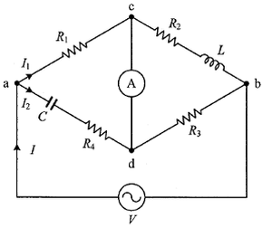
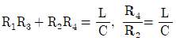
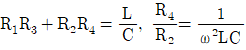
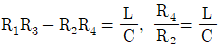
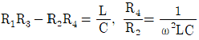
(정답률: 54%)
39. 유량, 압력, 액위, 농도 등의 공업 프로세스의 상태량을 제어량으로 하는 제어는?
- 프로그램제어
- 프로세스제어
- 비율제어
- 자동조정
(정답률: 77%)
40. 다이오드를 이용한 정류회로에서 여러 개의 다이오드를 직렬로 연결하여 사용하면?
- 다이오드를 높은 주파수에서 사용할 수 있다.
- 부하 출력의 맥동률을 감소시킬 수 있다.
- 다이오드를 과전압으로부터 보호할 수 있다.
- 다이오드를 과전류로부터 보호할 수 있다.
(정답률: 68%)
3과목: 소방관계법규
41. 소방기본법령상 벌칙이 5년 이하의 징역 또는 5천만원 이하의 벌금에 해당하지 않는 것은?
- 정당한 사유 없이 소방용수시설의 효용을 해치거나 그 정당한 사용을 방해한 자
- 소방자동차가 화재진압 및 구조·구급 활동을 위하여 출동할 때 그 출동을 방해한 자
- 출동한 소방대의 소방장비를 파손하거나 그 효용을 해하여 화재진압·인명구조 또는 구급활동을 방해한 자
- 사람을 구출하거나 불이 번지는 것을 막기 위하여 불이 번질 우려가 있는 소방대상물 사용제한의 강제처분을 방해한 자
(정답률: 56%)
42. 화재예방, 소방시설 설치·유지 및 안전관리에 관한 법률상 2급 소방안전관리대상물의 소방안전관리자로 선임될 수 없는 사람은?
- 위험물기능사 자격을 가진 사람
- 소방공무원으로 3년 이상 근무한 경력이 있는 사람
- 의용소방대원으로 3년 이상 근무한 경력이 있는 사람
- 2급 소방안전관리대상물의 소방안전관리에 관한 시험에 합격한 사람
(정답률: 57%)
43. 화재예방, 소방시설 설치·유지 및 안전관리에 관한 법률상 소방안전관리대상물의 관계인이 소방안전관리자를 선임한 경우에는 선임한 날부터 며칠 이내에 소방본부장 또는 소방서장에게 신고하여야 하는가?
- 7
- 14
- 21
- 30
(정답률: 66%)
44. 다음 보기 중 화재예방, 소방시설 설치·유지 및 안전관리에 관한 법률상 소방용품의 형식승인을 반드시 취소하여야만 하는 경우를 모두 고른 것은?
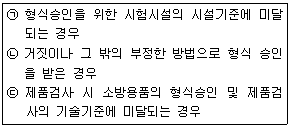
- ㉡
- ㉢
- ㉡, ㉢
- ㉠, ㉡, ㉢
(정답률: 63%)
45. 소방기본법령상 소방활동에 필요한 소화전·급수탑·저수조를 설치하고 유지·관리하여야 하는 사람은? (단, 수도법에 따라 설치되는 소화전은 제외한다.)
- 소방서장
- 시·도지사
- 소방본부장
- 소방파출소장
(정답률: 71%)
46. 소방기본법령상 소방용수시설인 저수조의 설치기준으로 맞는 것은?
- 흡수부분의 수심이 0.5m 이하일 것
- 지면으로부터의 낙차가 4.5m 이하일 것
- 흡수관의 투입구가 사각형의 경우에는 한 변의 길이가 60㎝ 이하일 것
- 저수조에 물을 공급하는 방법은 상수도에 연결하여 수동으로 급수되는 구조일 것
(정답률: 59%)
47. 다음 중 위험물안전관리법령상 제6류 위험물은?
- 유황
- 칼륨
- 황린
- 질산
(정답률: 69%)
48. 소방기본법령상 소방활동구역에 출입할 수 있는 자는?
- 한국소방안전원에 종사하는 자
- 수사업무에 종사하지 않는 검찰청 소속 공무원
- 의사·간호사 그 밖의 구조·구급업무에 종사하는 사람
- 소방활동구역 밖에 있는 소방대상물의 소유자·관리자 또는 점유자
(정답률: 73%)
49. 화재예방, 소방시설 설치·유지 및 안전관리에 관한 법률상 무창층 여부 판단 시 개구부 요건에 대한 기준으로 맞는 것은?
- 도로 또는 차량이 진입할 수 없는 빈터를 향할 것
- 내부 또는 외부에서 쉽게 파괴 또는 개방할 수 없을 것
- 크기는 지름 50㎝ 이상의 원이 내접할 수 있는 크기일 것
- 해당 층의 바닥면으로부터 개구부 밑부분까지의 높이가 1.5m 이내일 것
(정답률: 61%)
50. 화재예방, 소방시설 설치·유지 및 안전관리에 관한 법률상 소방시설관리업 등록의 결격사유에 해당하지 않는 사람은?
- 피성년후견인
- 소방시설 관리업의 등록이 취소된 날로부터 2년이 지난 자
- 금고 이상의 형의 집행유예를 선고받고 그 유예기간 중에 있는 자
- 금고 이상의 실형을 선고받고 그 집행이 면제된 날부터 2년이 지나지 아니한 자
(정답률: 59%)
51. 화재예방, 소방시설 설치·유지 및 안전관리에 관한 법률상 건축물의 신축·증축·용도변경 등의 허가 권한이 있는 행정기관은 건축허가를 할 때 미리 그 건축물 등의 시공지 또는 소재지를 관할하는 소방본부장이나 소방서장의 동의를 받아야 한다. 다음 중 건축허가 등의 동의대상물의 범위가 아닌 것은?
- 수련시설로서 연면적 200m2 이상인 건축물
- 지하층 또는 무창층이 있는 건축물로서 바닥면적이 150m2 이상인 층이 있는 것
- 승강기 등 기계장치에 의한 주차시설로서 자동차 10대 이상을 주차할 수 있는 시설
- 차고·주차장으로 사용되는 바닥면적이 200m2 이상인 층이 있는 건축물이나 주차시설
(정답률: 65%)
52. 소방기본법령상 소방대원에게 실시할 교육·훈련의 횟수 및 기간으로 옳은 것은?
- 1년마다 1회, 2주 이상
- 2년마다 1회, 2주 이상
- 3년마다 1회, 2주 이상
- 3년마다 1회, 4주 이상
(정답률: 70%)
53. 소방기본법령상 시·도의 소방본부와 소방서에서 운영하는 화재조사전담부서에서 관장 하는 업무가 아닌 것은?
- 화재조사의 실시
- 화재조사를 위한 장비의 관리운영에 관한 사항
- 화재피해 감소를 위한 예방 홍보에 관한 사항
- 화재조사의 발전과 조사요원의 능력향상에 관한 사항
(정답률: 71%)
54. 위험물안전관리법령상 제조소등을 설치하고자 하는 자는 누구의 허가를 받아 설치할 수 있는가?
- 소방서장
- 소방청장
- 시·도지사
- 안전관리자
(정답률: 77%)
55. 화재예방, 소방시설 설치·유지 및 안전관리에 관한 법률상 건축물대장의 건축물 현황도에 표시된 대지경계선 안에 둘 이상의 건축물이 있는 경우, 연소 우려가 있는 건축물의 구조에 대한 기준으로 맞는 것은?
- 건축물이 다른 건축물의 외벽으로부터 수평거리가 1층의 경우에는 6m 이하인 경우
- 건축물이 다른 건축물의 외벽으로부터 수평거리가 2층의 경우에는 6m 이하인 경우
- 건축물이 다른 건축물의 외벽으로부터 수평거리가 1층의 경우에는 20m 이상인 경우
- 건축물이 다른 건축물의 외벽으로부터 수평거기라 2층의 경우에는 20m 이상인 경우
(정답률: 57%)
56. 다음 소방시설 중 소방시설공사업법령상 하자보수 보증기간이 3년이 아닌 것은?
- 비상방송설비
- 옥내소화전설비
- 자동화재탐지설비
- 물분무등소화설비
(정답률: 64%)
57. 위험물안전관리법령상 업무상 과실로 제조소등에서 위험물을 유출·방출 또는 확산시켜 사람의 생명·신체 또는 재산에 대하여 위험을 발생시킨 자에 대한 벌칙으로 옳은 것은?
- 5년 이하의 금고 또는 5천만 원 이하의 벌금
- 5년 이하의 금고 또는 7천만 원 이하의 벌금
- 7년 이하의 금고 또는 5천만 원 이하의 벌금
- 7년 이하의 금고 또는 7천만 원 이하의 벌금
(정답률: 59%)
58. 화재예방, 소방시설 설치·유지 및 안전관리에 관한 법률상 특정소방대상물 중 숙박시설에 해당하지 않는 것은?
- 모텔
- 오피스텔
- 가족호텔
- 한국전통호텔
(정답률: 77%)
59. 소방시설공사업법상 소방시설업의 등록을 하지 아니하고 영업을 한 사람에 대한 벌칙은?
- 500만원 이하의 벌금
- 1년 이하의 징역 또는 2천만원 이하의 벌금
- 3년 이하의 징역 또는 3천만원 이하의 벌금
- 5년 이하의 징역 또는 5천만원 이하의 벌금
(정답률: 67%)
60. 위험물안전관리법령상 위험물의 안전관리와 관련된 업무를 수행하는 자로서 소방청장이 실시하는 안전교육대상자가 아닌 사람은?
- 제조소등의 관계인
- 안전관리자로 선임된 자
- 위험물운송자로 종사하는 자
- 탱크시험자의 기술인력으로 종사하는 자
(정답률: 57%)
4과목: 소방전기시설의 구조 및 원리
61. 자동화재탐지설비 및 시각경보장치의 화재안전기준(NFSC 203)에 따라 부착높이 8m 이상 15m 미만에 설치되는 감지기의 종류로 틀린 것은?
- 불꽃감지기
- 이온화식 2종
- 차동식 분포형
- 보상식 스포트형
(정답률: 55%)
62. 비상경보설비 및 단독경보형감지기의 화재안전기준(NFSC 201)에 따른 비상경보설비 중 비상벨설비에 대한 설명으로 옳은 것은?
- 화재발생 상황을 경종으로 경보하는 설비
- 화재발생 상황을 사이렌으로 경보하는 설비
- 화재발생 신호를 수신기에 수동으로 발신하는 설비
- 화재발생 상황을 단독으로 감지하여 자체에 내장된 음향장치로 경보 하는 설비
(정답률: 57%)
63. 자동화재탐지설비 및 시각경보장치의 화재안전기준(NFSC 203)에 따라 스포트형 감지기를 경사면에 설치할 경우, 몇 도 미만으로 설치하여야 하는가?
- 5
- 15
- 25
- 45
(정답률: 55%)
64. 자동화재속보설비의 속보기의 성능인증 및 제품검사의 기술기준에 따른 속보기의 기능으로 틀린 것은?
- 예비전원은 자동적으로 충전되어야 하며 자동과충전방지장치가 있어야 한다.
- 예비전원을 병렬로 접속하는 경우에는 역충전 방지 등의 조치를 하여야 한다.
- 화재신호를 수신하거나 속보기를 수동으로 동작시키는 경우 자동적으로 녹색 화재표시등이 점등되어야 한다.
- 연동 또는 수동으로 소방관서에 화재발생 음성정보를 속보중인 경우에도 송수화장치를 이용한 통화가 우선적으로 가능하여야 한다.
(정답률: 66%)
65. 누전경보기의 형식승인 및 제품검사의 기술기준에 따라 변류기(경계전로의 전선을 그 변류기에 관통시키는 것은 제외한다.)는 경계전로에 정격전류를 흘리는 경우, 그 경계전로의 전압강하는 몇 V 이하이어야 하는가?
- 0.3
- 0.5
- 1
- 2
(정답률: 57%)
66. 누전경보기의 화재안전기준(NFSC 2⑤)에 따른 누전경보기 전원의 시설기준으로 틀린 것은?
- 전원은 분전반으로부터 전용회로로 하여야 한다.
- 각 극에 개폐기 및 15A 이하의 과전류차단기를 설치하여야 한다.
- 전원의 개폐기에는 누전경보기용임을 표시한 표지를 하여야 한다.
- 전원을 분기할 때에는 다른 차단기에 따라 동시에 전원이 차단되도록 하여야 한다.
(정답률: 74%)
67. 감지기의 형식승인 및 제품검사의 기술기준에 따른 감지기의 구조 및 기능으로 틀린 것은?
- 작동이 확실하고, 취급·점검이 쉬워야 한다.
- 기기 내의 배선은 충분한 전류용량을 갖는 것으로 하여야 한다.
- 극성이 있는 경우에는 오접속을 방지하기 위하여 필요한 조치를 하여야 한다.
- 방수형 및 방폭형은 보수 및 부속품의 교체가 용이하도록 개방하기 쉬운 구조이어야 한다.
(정답률: 70%)
68. 비상콘센트설비의 화재안전기준(NFSC 504)에 따라 비상콘센트를 보호하기 위한 비상콘센트 보호함의 시설기준으로 틀린 것은?
- 보호함 상부에 적색의 표시등을 설치하여야 한다.
- 보호함 표면에 “비상콘센트”라고 표시한 표지를 하여야 한다.
- 보호함의 문을 쉽게 개폐할 수 없도록 잠금장치를 하여야 한다.
- 비상콘센트의 보호함을 옥내소화전함 등과 접속하여 설치하는 경우에는 옥내소화전함 등의 표시등과 겸용할 수 있다.
(정답률: 72%)
69. 자동화재탐지설비 및 시각경보장치의 화재안전기준(NFSC 203)에 따른 주요구성요소에 해당하지 않는 것은?
- 중계기
- 수신기
- 변류기
- 발신기
(정답률: 60%)
70. 비상방송설비의 화재안전기준(NFSC 202)에 따라 하나의 특정소방대상물에 몇 이상의 조작부가 설치되어 있는 때에는 각각의 조작부가 있는 장소 상호간에 동시통화가 가능한 설비를 설치하고, 어느 조작부에서도 해당 특정소방대상물의 전 구역에 방송을 할 수 있도록 하는가?
- 1
- 2
- 3
- 4
(정답률: 55%)
71. 비상조명등의 화재안전기준(NFSC 304)에 따라 보행거리 25m 이내마다 휴대용비상조명등을 3개 이상 설치하여야 하는 곳은?
- 호텔
- 대형백화점
- 영화상영관
- 지하상가 및 지하역사
(정답률: 74%)
72. 비상콘센트설비의 화재안전기준(NFSC 504)에 따라 비상콘센트의 플러그접속기는 어떤 것을 사용하여야 하는가?
- 접지형 2극 플러그접속기
- 접지형 4극 플러그접속기
- 비접지형 2극 플러그접속기
- 비접지형 4극 플러그접속기
(정답률: 67%)
73. 무선통신보조설비의 화재안전기준(NFSC 5⑤)에 따른 무선통신보조설비의 시설기준으로 틀린 것은?
- 분배기·분파기 및 혼합기 등의 임피던스는 100Ω의 것으로 할 것
- 누설동축케이블 및 안테나는 고압의 전로로부터 1.5m 이상 떨어진 위치에 설치할 것
- 지상에 설치하는 접속단자는 보행거리 300m 이내마다 설치하고, 다른 용도로 사용되는 접속단자에서 5m 이상의 거리를 둘 것
- 증폭기에는 비상전원이 부착된 것으로 하고 해당 비상전원 용량은 무선통신보조설비를 유효하게 30분 이상 작동시킬 수 있는 것으로 할 것
(정답률: 55%)
74. 유도등 및 유도표지의 화재안전기준(NFSC 303)에 따른 통로유도등의 시설기준으로 옳은 것은?
- 계단통로유도등은 바닥으로부터 높이 1m 이하의 위치에 설치하여야 한다.
- 복도통로유도등은 바닥으로부터 높이 1.5m 이하의 위치에 설치하여야 한다.
- 거실통로유도등은 바닥으로부터 높이 1m 이상의 위치에 설치하여야 한다.
- 거실통로유도등은 거실통로에 기둥이 설치된 경우에는 기둥부분의 바닥으로부터 높이 1m 이하의 위치에 설치할 수 있다.
(정답률: 54%)
75. 비상방송설비의 화재안전기준(NFSC 202)에 따른 비상방송설비의 구성요소로 틀린 것은?
- 확성기
- 감지기
- 증폭기
- 음량조절기
(정답률: 61%)
76. 무선통신보조설비의 화재안전기준(NFSC 5⑤)에 따라 누설동축케이블은 화재에 따라 해당 케이블의 피복이 소실된 경우에 케이블 본체가 떨어지지 아니하도록 몇 m 이내 마다 금속제 또는 자기제 등의 지지금구로 벽· 천장·기둥 등에 견고하게 고정시켜야 하는가?
- 2
- 4
- 6
- 8
(정답률: 61%)
77. 소방시설용 비상전원수전설비의 화재안전기준(NFSC 602)에 따라 일반전기사업자로부터 특별고압 또는 고압으로 수전하는 비상전원 수전설비가 큐비클형인 경우 옥외에 설치하는 외함에 노출하여 설치할 수 없는 것은?
- 환기장치
- 전선의 인입구 및 인출구
- 불연성 또는 난연성재료로 덮개를 설치한 표시등
- 불연성 또는 난연성재료로 제작된 계기용 전환스위치
(정답률: 51%)
78. 유도등의 형식승인 및 제품검사의 기술기준에 따라 ( ㉠ ), ( ㉡ ), ( ㉢ )에 들어갈 내용으로 옳은 것은?
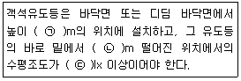
- ㉠ 0.3 ㉡ 0.1 ㉢ 0.2
- ㉠ 0.5 ㉡ 0.1 ㉢ 0.3
- ㉠ 0.5 ㉡ 0.3 ㉢ 0.2
- ㉠ 1.0 ㉡ 0.3 ㉢ 0.3
(정답률: 47%)
79. 비상경보설비 및 단독경보형감지기의 화재안전기준(NFSC 201)에 따라 비상벨설비 또는 자동식사이렌설비 부속회로의 전로와 대지 사이 및 배선 상호간의 절연저항은 1경계구역마다 직류 250V의 절연저항측정기를 사용하여 측정한 절연저항이 몇 ㏁ 이상이 되도록 하여야 하는가?
- 0.1
- 0.2
- 0.3
- 0.5
(정답률: 61%)
80. 유도등 및 유도표지의 화재안전기준(NFSC 303)에 따라 거실의 통로가 벽체 등으로 구획된 경우에는 어떤 유도등을 설치해야하는가?
- 피난구유도등
- 계단통로유도등
- 복도통로유도등
- 거실통로유도등
(정답률: 49%)